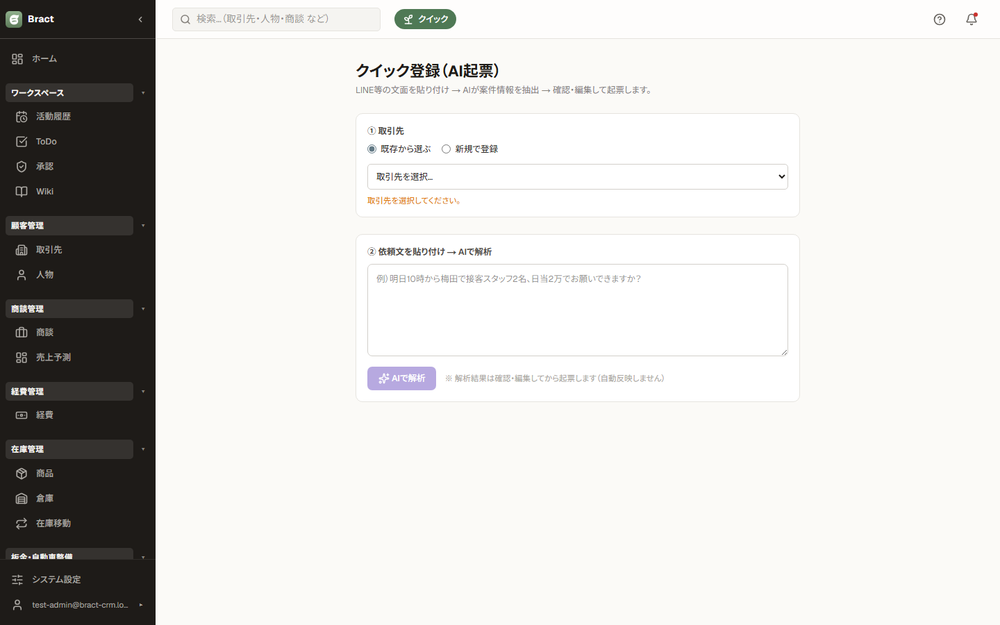
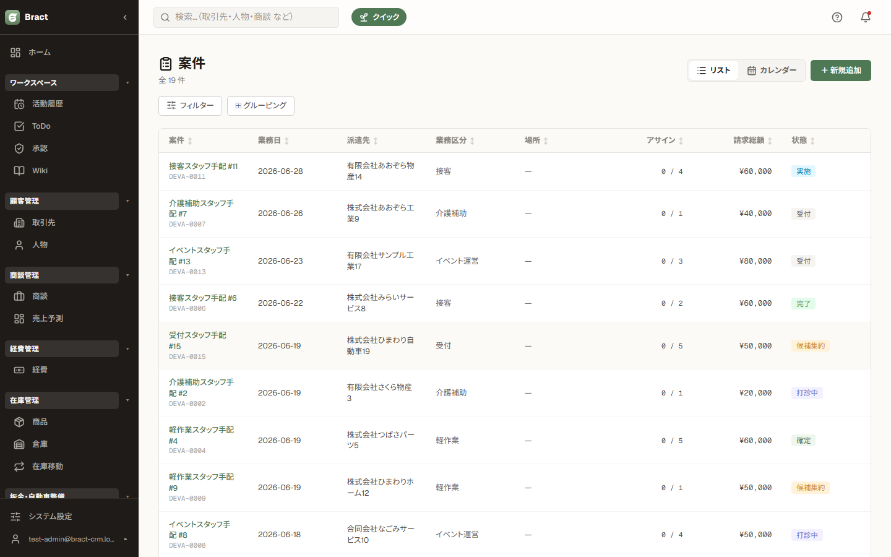
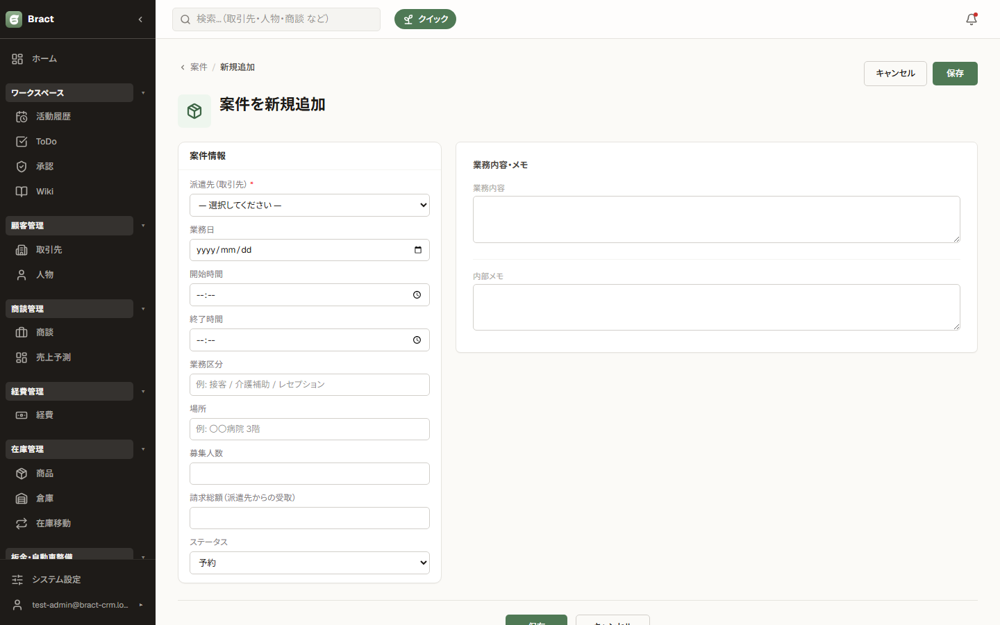
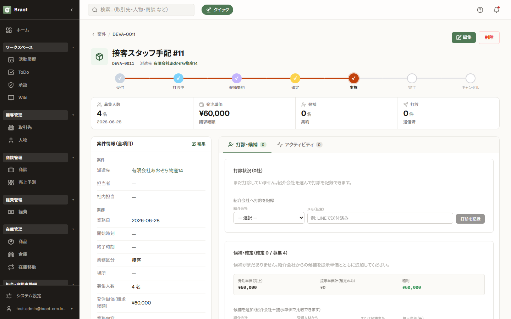
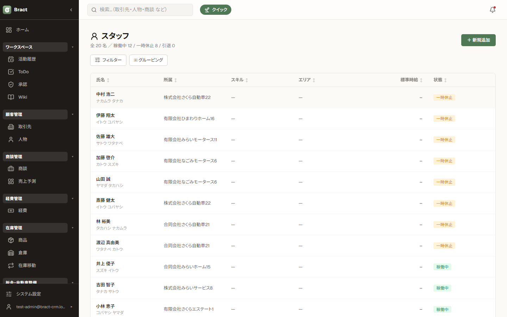
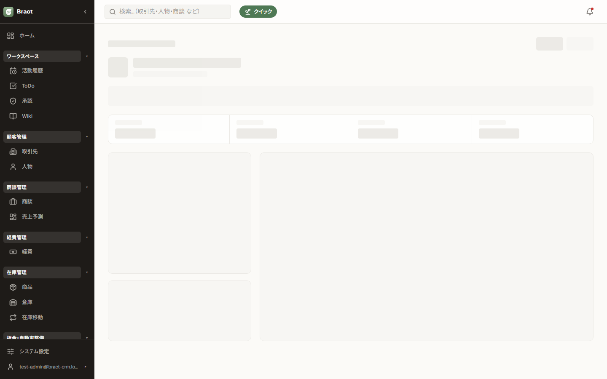
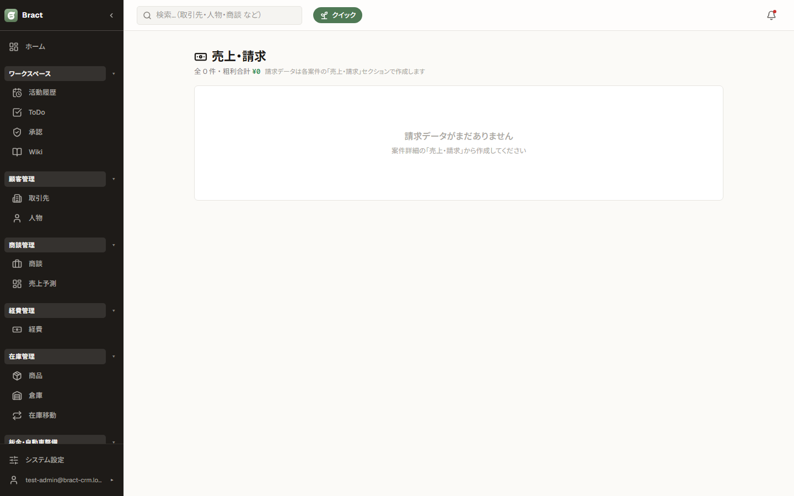

人材手配 編
案件（派遣依頼）の受付からスタッフの手配、売上・請求までの流れを説明します。基本操作は共通編を参照してください。
この章の内容
1. 業務の流れ
| ① 案件を受ける | クライアントからの依頼を「案件」として登録（AI クイック起票 or 手入力）。 |
|---|---|
| ② スタッフを手配 | 案件にスタッフを候補として追加し、提示単価を決めて確定。 |
| ③ 業務実施 | 業務日を迎えたらステータスを進める。 |
| ④ 請求・支払 | 確定内容から請求データを生成し、請求 / 入金、スタッフへの支払を管理。 |
2. AI クイック起票

- サイドバーの「クイック」またはモジュールホームから クイック登録（AI起票） を開きます。
- LINE やメールで届いた依頼文をそのまま貼り付けて実行します。
- AI が日付・時間・場所・人数・単価などを読み取って案件のフォームに展開します。内容を確認・修正してから登録してください。クライアント名は既存の取引先と照合されます。
3. 案件管理



- 案件詳細の「スタッフ」セクションで スタッフを追加 し、候補者と提示単価（スタッフへの支払額）を登録します。
- 出られることが確定したら候補を確定にします。募集人数に達すると案件が「充足」になります。
- 案件のステータス（募集中 → 充足 → 終了 など）は詳細画面から進めます。
単価は「発注単価（クライアントへ請求する額）」と「提示単価（スタッフへ支払う額）」の2種類です。差額が粗利として売上・請求に集計されます。
4. スタッフ管理


登録スタッフの台帳です。所属会社・連絡先・標準時給（請求 / 仕入）・スキル・対応エリアを管理します。案件への手配履歴はスタッフ詳細から確認できます。
5. 売上・請求

- 案件の調整が終わったら、案件詳細の「売上・請求」セクションで 請求データを生成 します。請求額（クライアント発注単価）・支払額（確定スタッフの提示単価合計）・粗利が自動計算されます。
- サイドバーの「売上・請求」で全案件の請求を月次グルーピングで確認し、請求済み / 入金済み、支払済みのステータスを更新します（請求日・支払日は自動記録）。
- 金額を修正したい場合は、未請求のうちに再計算または削除して作り直します。請求済み以降は再計算できません。